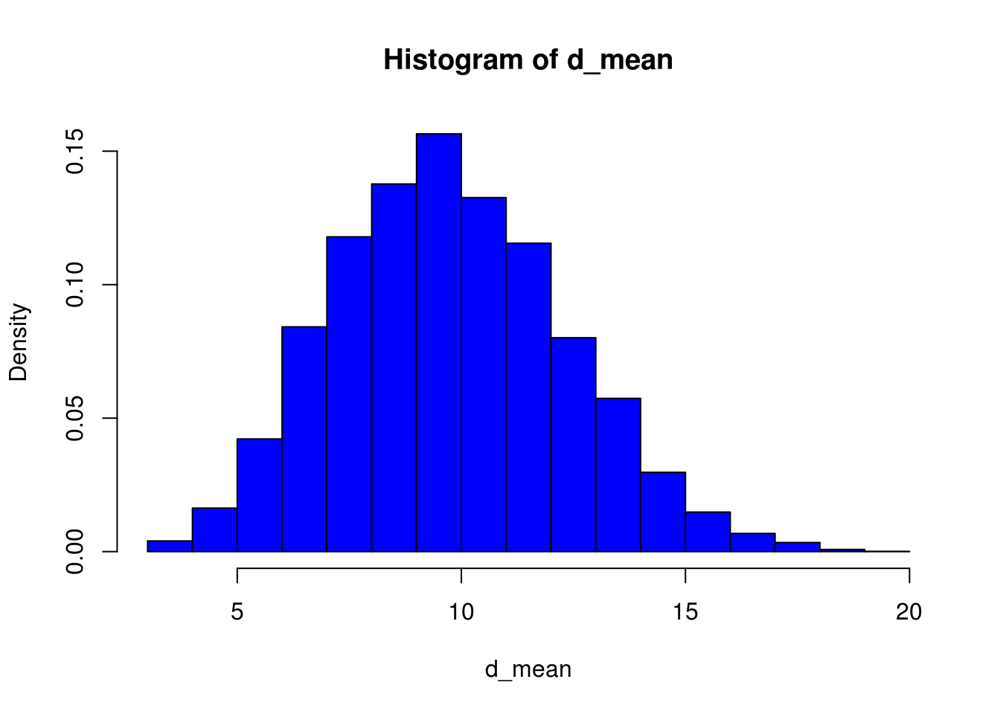

Distribuciones Muestrales
Distribuciones Muestrales
Uno de los objetivos de la estadística es saber acerca del comportamiento de parámetros poblacionales tales como: la media \(\mu\), la varianza \(\sigma^2\) o la proporción \(p\). Se extrae una muestra aleatoria de la población y se calcula el valor de un estadístico correspondiente, por ejemplo, la media muestral \(\bar{X}\), la varianza muestral \(S^2\) o la proporción muestral \(\hat{p}\). El valor del estadístico es aleatorio porque depende de los elementos elegidos en la muestra seleccionada y, por lo tanto, el estadístico tiene una distribución de probabilidad la cual es llamada la Distribución Muestral del Estadístico.
Distribución de la media muestral cuando la población es normal
Suponga que su objeto de estudio es una población normal y de donde se extraen muestras aleatorias de tamaño \(n\) de una población infinita con media poblacional \(\mu\) y varianza \(\sigma^2\)
La media de las medias muestrales es igual a la media poblacional. Es decir, \(\mu_{\bar{X}}=\mu\)
La varianza de las medias muestrales es igual a la varianza poblacional dividida por \(n\). En consecuencia la desviación estándar de las medias muestrales (llamada también el error estándar de la media muestral), es igual a la desviación estándar poblacional dividida por la raíz cuadrada de \(n\). Es decir,
\[\sigma_{\bar{X}}=\dfrac{\sigma}{\sqrt{n}}\]
El Teorema del Límite Central
De una población infinita con media y varianza se extraen muestras aleatorias de tamaño \(n\), entonces la media muestral \(\bar{X}\) se comporta aproximadamente como una variable aleatoria normal con media igual a la media poblacional \(\mu\) y con desviación estándar \(\sigma\) igual a la desviación poblacional dividida por la raíz cuadrada del tamaño de la muestra, siempre que sea grande. Esto es:
\[\bar{X} \sim Normal(\mu,\frac{\sigma}{\sqrt{n}})\]
Estandarizando, donde \(Z = \dfrac{\bar{X}-\mu}{\dfrac{\sigma}{\sqrt{n}}}\)
tenemos:
\[Z \sim Normal(0,1)\]
Ejemplo Teorema del límite central
Considerar una población que consiste de los siguientes datos: 3, 4, 6, 8, 10, 11, 12, 15, 20.
- Calculamos la media y desviación estándar de dicha población. Para esto usamos
RStudio
n <- c(3, 4, 6, 8, 10, 11, 12, 15, 20)
media_n <- mean(n)
media_n## [1] 9.888889sd_n <- sd(n)
sd_n## [1] 5.418589Notamos que \(\mu=9.88\) y que \(\sigma=5.41\)
- Extraemos 30 muestras de tamaño 4 de dicha población, estó mediante el siguiente código
n <- c(3, 4, 6, 8, 10, 11, 12, 15, 20)
d_mean <- c()
for (i in 1:30){
d_mean[i] <- mean(sample(n,size = 4,replace = TRUE))
}
#d_mean
mean(d_mean)## [1] 10.375sd(d_mean)## [1] 2.488551- Tercero, calculamos las medias de todas esas muestras y tratamos de ver gráficamente mediante un histograma al menos si hay acercamiento a Normalidad.
mean(d_mean)## [1] 10.375sd(d_mean)## [1] 2.488551Interpretación: Notar que la media de las medias muestrales es \(\mu_{\bar{X}}=10.075\) que está bien cerca de la media poblacional . Además la desviación estándar de la media muestral es 2.806 mientras que \(\sigma/\sqrt{n}=5.418/2=2.709\). Ambos valores también están relativamente cerca. El histograma si está un poco alejado de la normalidad. Si se incrementa el tamaño de las muestras se puede notar una mejor aproximación a la Normal.
hist(d_mean,col = "blue",freq = F)
Si se incrementa el tamaño de las muestras a 1000 se puede notar una mejor aproximación a la Normal.
n <- c(3, 4, 6, 8, 10, 11, 12, 15, 20)
d_mean <- c()
for (i in 1:1000){
d_mean[i] <- mean(sample(n,size = 4,replace = TRUE))
}
hist(d_mean,col = "blue",freq = F)
Distribución de la Proporción Muestral
Si de una población distribuida Binomialmente con probabilidad de éxito \(p\), se extrae una muestra aleatoria de tamaño \(n\), entonces se puede mostrar que la media de X: “número de éxitos en la muestra”, es \(\mu=np\) y que su varianza es \(\sigma^2=np(1-p)\). En consecuencia la proporción muestral \(\hat{p}=\dfrac{X}{n}\) tiene media \(p\) y varianza \(\dfrac{p(1-p)}{n}\). Entonces: por el Teorema del Límite Central, cuando \(n\) es grande se tiene:
\[Z=\dfrac{X-np}{\sqrt{np(1-p)}}=\dfrac{\hat{p}-p}{\sqrt{\dfrac{p(1-p)}{n}}}\]